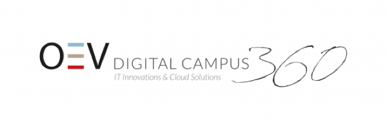
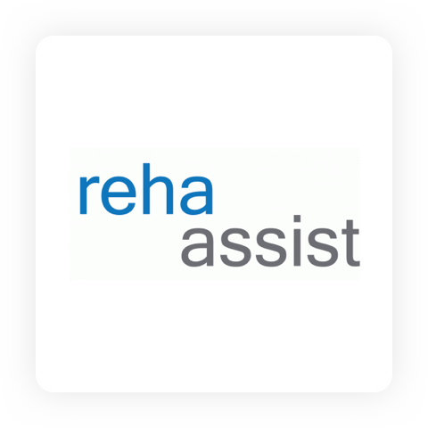

Project requirements
⦿ Flexible tech stack on the frontend
⦿ Microservices architecture
⦿ Quick turnaround time for publishing new content
⦿ Future-proof the stack beyond the MVP stage
Product used
⦿ Webberrly Serverless CMS
Partner
OEV Online Dienste GmbH was founded in Düsseldorf (Germany) in 2001. It is an expert for digital media with distinct expertise in CMS systems. It develops comprehensive, cross-media concepts and advises clients on all aspects of digital distribution.

What was the challenge?
OEV Online was tasked with developing an MVP as a value-added module, but with the greatest technical flexibility. It was necessary for OEV Online to be able to react quickly to changing conditions at any time during the development phase. Even if it is “only” an MVP at first, it was important to choose an architecture from the outset that would still be suitable after the MVP stage.
"We knew that requirements could change at any time, that the front-end had to be flexible and the content had to be easily modifiable."
Nico Schönnagel, OEV solution architect
Approach to solving the problem
OEV Online initially considered developing an application on the basis of the architectural considerations itself. An Angular or React application on S3 for full flexibility and in the backend a microservice architecture with Node.js. For the management of the content, a separate solution would have been used.
How did Webberrly provide the solution?
Webberrly provided the development team with the possibility to focus straightway on the requirements for the customers. Webberrly features an open-source headless CMS hosted natively on top of the AWS serverless offering. Thus the system fulfils exactly the requirements for modern architecture. Webberrly comes with a GraphQL API, which is used to communicate with the backend. Webberrly takes full advantages of the serverless infrastructure which in return provides a scalable and cost-efficient solution. Finally, being also a headless solution, it meant the choice of the frontend stack wasn't dictated by the CMS itself, which provided the required flexibility OEV Online required.
“Webberrly fulfilled the requirements exactly and gave the development team the possibility not to concentrate on the reproduction of a CMS system but to implement the requirements for the customers.”
Conclusion
In OEV Online's example of www.s-pflegepartner.de, an MVP was developed using Webberrly, which ensures the stack can take the project beyond its current MVP stage. At the same time Webberrly, being a serverless solution, keeps the infrastructure and maintenance cost in-line with the expectations of the project's budget.
"Even if it is only a matter of designing a small MVP for the time being, it is worth thinking bigger."
What mattered most to OEV Online when choosing Webberrly?
Reasoning provided by - Nico Schönnagel, OEV solution architect: "We don’t like servers (it’s unfair - maybe a little) but what we really like is serverless! Thus we were looking for a Content Management System which is serverless so that we don’t have to care about performance issues. Second, we love IaC, so it was important to us that we get something where we could deploy the whole infrastructure. Additionally, we wanted to be able to add fancy things to the CMS and have it hosted in our own AWS environment. And last but not least, we were looking for a headless CMS. So in the end, there was just one CMS which survives"
CLIENT
S-MARKT & MEHRWERT
S-Markt & Mehrwert GmbH is a service company that is is a part of the Sparkassen-Finanzgruppe. The company offers services for telephone and electronic customer contact management, new media services and marketing consulting.
Germany
CLIENT
REHA ASSIST
Reha Assist Deutschland GmbH provides rehabilitation services and specialized in the care of the severely and severely disabled. They make it possible to maintain mobility, clarify the care situation if necessary and implement the joint decisions organizationally.
Germany